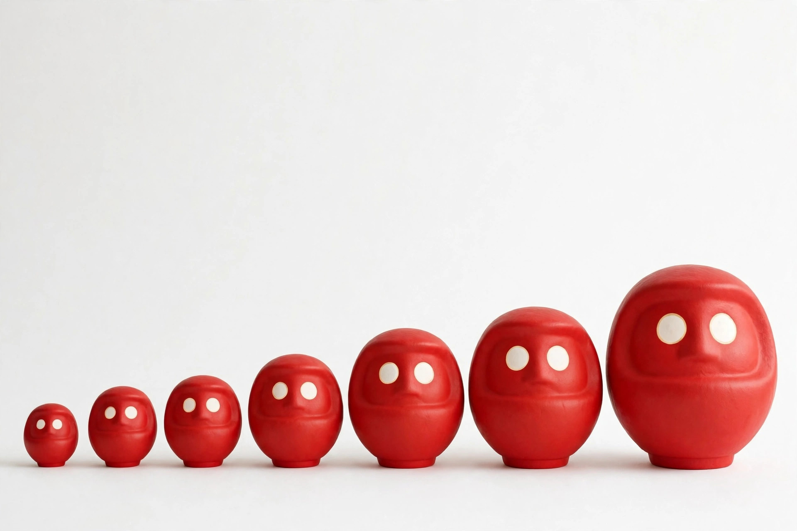

だるまのサイズと号数ガイド ― 何号を選べばいい？

だるまの商品ページを見ると「3号」「5号」といった表示が目に入ります。この「号」は大きさを表す単位ですが、センチメートルに直すとどれくらいなのか、初めての方には分かりにくいものです。この記事では号数と高さの換算の目安と、置き場所や用途に合わせた選び方をまとめました。
号数とは何か
号数は、だるまの高さをおおまかに示す伝統的な呼び方です。号数が大きくなるほど高さも増し、存在感や価格も上がっていきます。ただし、号とセンチメートルの関係に全国共通の厳密な規格があるわけではありません。下の表は一般的に知られる目安としてご覧ください。
号数と高さの換算目安
| 号数 | 高さの目安 | イメージ |
|---|---|---|
| 0.5号 | 約4cm | 手のひらに乗る豆サイズ |
| 1号 | 約6cm | 小さな置物サイズ |
| 2号 | 約9cm | デスクに置きやすい |
| 3号 | 約12cm | 棚や玄関に程よい |
| 4号 | 約15cm | しっかり目に入る大きさ |
| 5号 | 約18cm | 贈り物でも人気の標準サイズ |
| 7号 | 約24cm | 店舗のカウンターなどに |
| 10号 | 約33cm | 存在感のある大型 |
| 15号 | 約48cm | イベントや式典向け |
※上記は一般的に知られる目安です。実際の高さは製造元により多少異なります。購入時は商品ページに記載された実寸もあわせてご確認ください。
置き場所・用途別の選び方
デスクや本棚に ― 1号〜3号
受験勉強や資格取得など、自分の頑張りを見守ってもらう用途には小さめが向いています。視界に入りやすく、場所も取りません。
玄関やリビングに ― 3号〜5号
家族の願いを託すなら、帰宅したときに自然と目に入る中サイズがおすすめです。棚の奥行きにも収まりやすい大きさです。
店舗・事務所や贈り物に ― 5号〜10号
開店祝いや周年祝いでは、遠くからでも分かる大きさが喜ばれます。置き場所の広さを先方にさりげなく確認できると、より確実です。
行事や式典に ― 10号以上
大勢で目入れをする場面では大型が映えます。ただし保管場所も必要になるため、使う期間と置き場を決めてから選びましょう。
失敗しないためのひとこと
大きければ願いが強くなる、という決まりはありません。大切なのは、願いが叶うまでの間、無理なく毎日目に入る場所に置けることです。置き場所をメジャーで測ってから号数を決めると、届いてから「大きすぎた」「小さすぎた」という失敗を防げます。